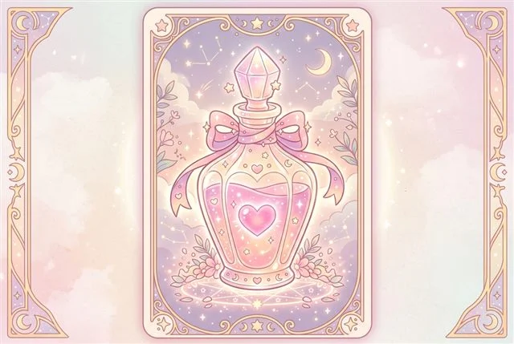
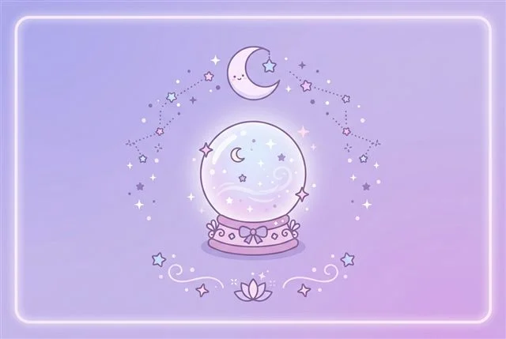
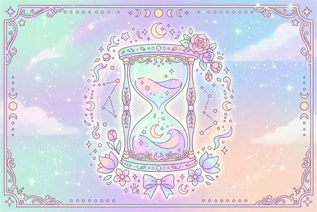
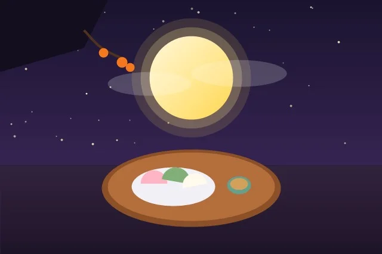
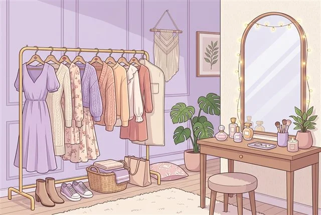

나의 연애유형 테스트: 내 안의 숨겨진 연애 캐릭터는?
냉철한 분석가부터 낭만적인 사랑꾼까지! 20가지 현실 시나리오를 통해 나의 무의식 속 연애 스타일과 찰떡궁합 파트너를 분석합니다.
심리 & 운세 테스트
회원가입 없이 바로 즐기는 무료 테스트
크리스마스 트리 꾸미기 & 익명 롤링페이퍼
나만의 트리를 만들고 친구들의 진심 어린 편지를 12월 25일에 열어보세요!

사주 연애운 테스트
생년월일 일간 캐릭터로 보는 연애운과 배우자궁 분석

운명의 붉은 실 궁합
우리 둘은 천생연분일까? 천간합과 지지합 찰떡 케미
사주 정통 인생 운세
사주팔자 8글자로 풀어내는 나의 10년 대운과 직업 적성

나의 힐링 성격 유형
지친 일상 속 나에게 꼭 맞는 휴식과 감성 에너지 처방전

한가위 디저트 테스트
꿀송편부터 약과까지, 내 안의 디저트 성향 알아보기

퍼스널 스타일링 테스트
내 기질과 무드에 어울리는 최적의 패션 스타일링 가이드
테스트모음 칼럼
테스트에 쓰인 심리학·명리학 개념을 쉽게 풀어 쓴 글
MBTI 16가지 성격 유형별 연애 궁합표: 인지기능 기반 환상의 케미와 갈등 관리
칼 융의 심리 유형론과 8대 인지기능(Cognitive Functions) 모델을 바탕으로 16가지 성격 유형 간의 주기능·열등기능 보완 관계와 갈등 해결 프로토콜을 제시합니다.
성인 애착유형 4가지와 연애 패턴 총정리: 불안과 회피의 사슬을 끊고 안정형으로
존 볼비의 애착 이론을 바탕으로 안정형, 불안형, 거부회피형, 공포회피형의 무의식적 작동 기제와 불안형-회피형 파멸적 악순환을 극복하는 3단계 로드맵을 안내합니다.
사주 10가지 일간(日干)별 성격과 연애 궁합 총정리: 갑목부터 계수까지 타고난 본질
사주팔자 여덟 글자 중 나 자신을 상징하는 핵심 10천간의 자연물 비유와 심층 심리, 직업 적성 및 찰떡 천간합 파트너를 정리했습니다.
연애 오래가는 커플들의 4가지 심리학적 특징: 가트맨 박사의 40년 관계 연구
설렘이 끝난 후에도 깊은 사랑을 유지하는 비결. 5:1의 긍정 상호작용 법칙과 관계를 파괴하는 4대 독소(비난·방어·경멸·담쌓기)의 해독제 가이드.
테스트모음은 이렇게 만들어요
테스트모음은 개인이 운영하는 사이트입니다. 어떤 자료를 참고했고, 결과를 어떻게 받아들이면 좋을지 솔직하게 안내합니다.
심리 테스트
애착 이론, MBTI 등 널리 알려진 성격 이론의 개념을 참고해 문항을 만들었습니다. 표준화 과정을 거친 공인 심리검사는 아니므로 재미와 자기 성찰용으로 활용해 주세요.
사주 테스트
생년월일로 일간(日干)과 오행을 계산하고, 전통 명리학의 해석 개념을 쉽게 풀어 보여줍니다. 미래를 예언하는 도구가 아닌 재미용 풀이입니다.
개인정보 처리
생년월일과 테스트 답변은 브라우저 안에서만 계산에 쓰이고 서버로 보내지 않습니다. (롤링페이퍼 편지는 예외로 저장되며, 개인정보처리방침에 안내되어 있습니다.)
자주 묻는 질문 (FAQ)
테스트모음 이용에 대한 안내
Q. 테스트모음의 테스트는 어떻게 만들어졌나요?
심리 테스트는 애착 이론, MBTI 같은 대중적으로 알려진 성격 이론의 개념을 참고해 문항과 결과를 직접 만들었고, 사주 테스트는 생년월일로 일간과 오행을 계산해 전통 명리학의 해석을 쉽게 풀어 보여줍니다. 공인 심리검사나 전문 상담이 아닌, 재미와 자기 성찰을 위한 참고용 콘텐츠입니다.
Q. 사주 및 궁합 분석 시 입력하는 생년월일 정보는 안전한가요?
입력하신 생년월일과 태어난 시간은 이용자의 브라우저 안에서만 계산에 사용되며, 서버로 전송하거나 저장하지 않습니다. 회원가입도 필요 없습니다.
Q. 테스트 결과와 칼럼은 어떻게 활용하는 것이 좋은가요?
결과에 적힌 성향 라벨에 갇히기보다, 내가 어떤 상황에서 불안이나 회피 반응을 보이는지, 나와 다른 기질의 연인과 어떻게 소통해야 갈등을 줄일 수 있는지를 객관적으로 이해하는 실용적인 대화 지침서로 활용하시는 것을 추천합니다.
Q. 테스트모음의 칼럼은 누가 작성하나요?
테스트모음 운영자가 심리학·명리학 관련 서적과 공개된 자료를 참고해 직접 정리합니다. 운영자는 심리 상담·의료 전문가가 아니므로, 칼럼은 일반 정보로 참고해 주시고 깊은 고민은 전문 상담 기관과 상의하시길 권합니다.